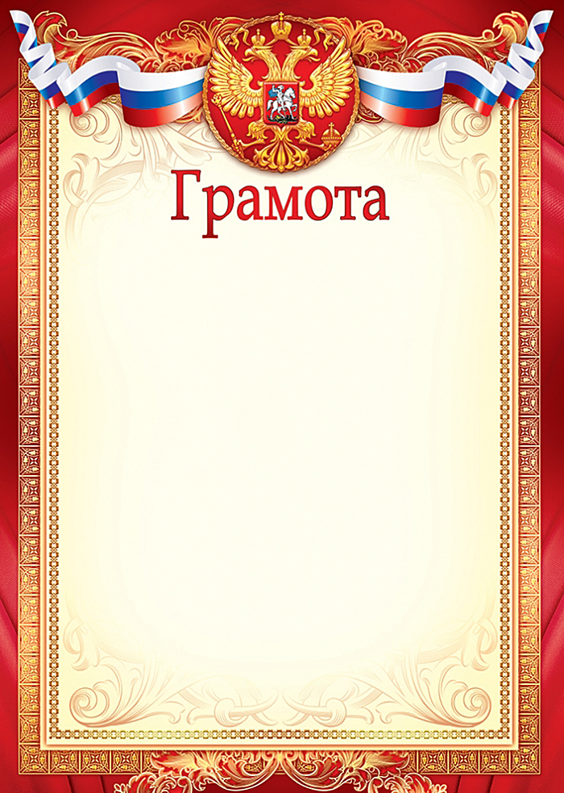
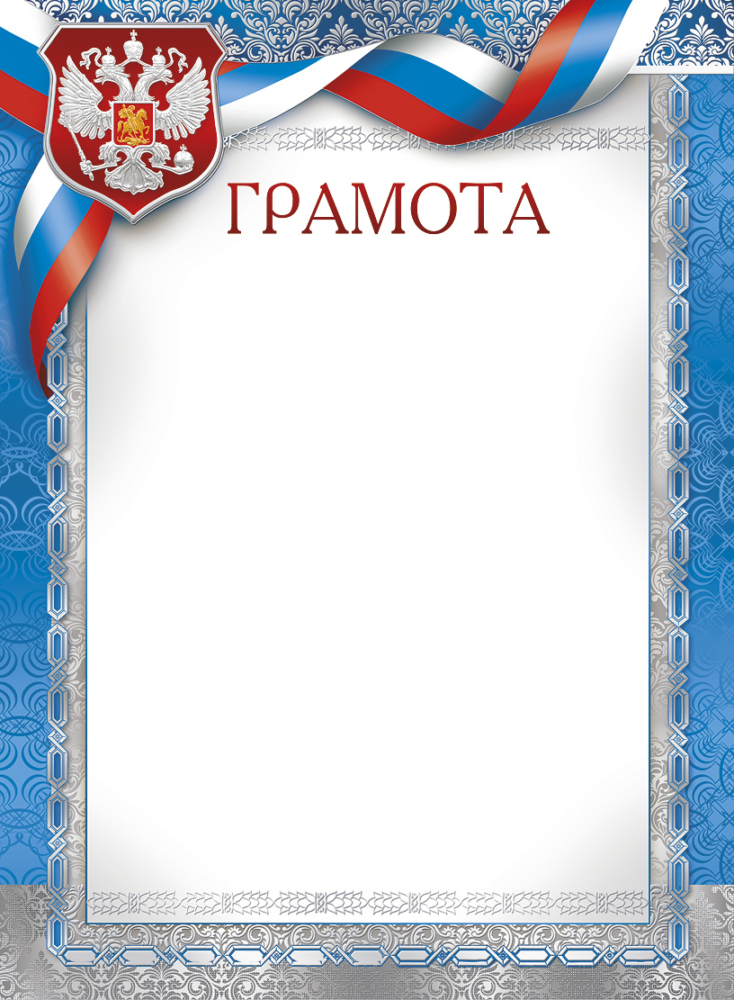
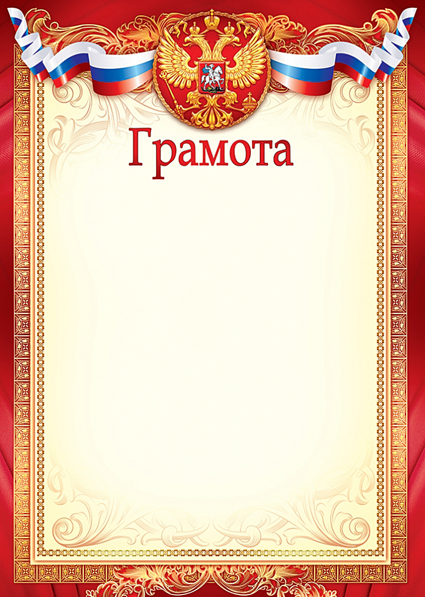
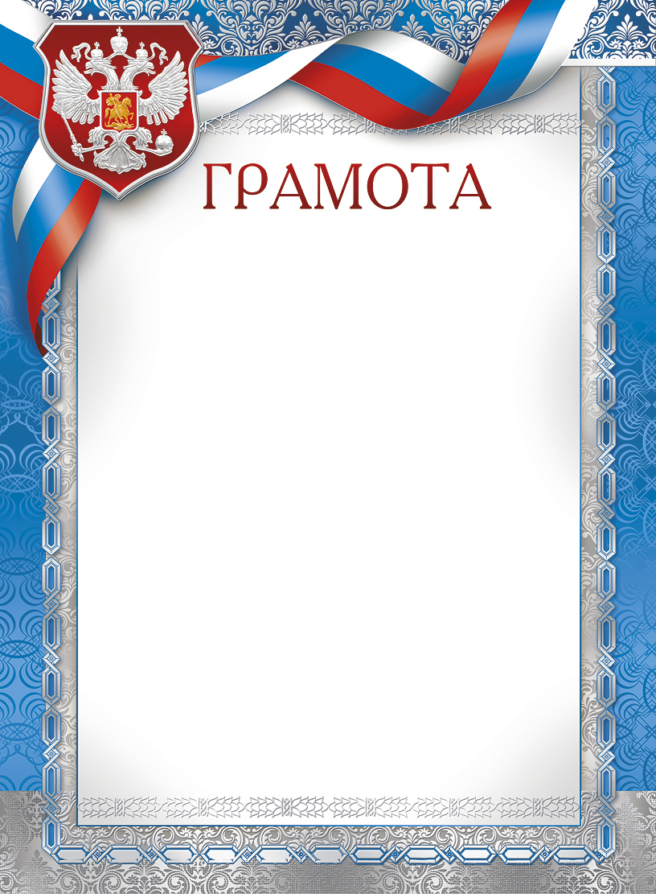

Страхи и фобии
Уже более 12лет как психолог работающий со страхами и фобиями я помогаю приходить в более
Устойчивое, Уверенное, Спокойное состояние, когда внутри приятно от самой себя и можно
простраивать СВОЮ жизнь, вместо того, чтобы бесконечно бояться то одного, то другого или
подчинять свою жизнь одному доминирующему страху или фобии.
Огромное количество энергии тратится через ощущение, когда Страшно, на подавление этого
ощущения и на избегание всего, что касается страха.
А что если я вам скажу, что в этом заложен колоссальный ресурс?
Ко мне обращаются как к психологу побороть страх, мы с ним не боремся, не преодолеваем, а
прорабатываем и трансформируем, усиливаем вас, и когда ощущение «Страшно» уходит,
высвобождается очень много энергии, которую вы направляете на свои цели и желания.
После проработки страхов у психолога вы начинаете строить свою жизнь по-другому, поскольку
принимаете жизненные решения и большие и маленькие не из «Мне страшно и А Вдруг!», а из
СВОЕЙ внутренней ПРИРОДЫ женской, своих настоящих желаний , а не навязанных кем-то.
Отношения
Когда-то я услышала такую фразу: “Отношения – это самая трудная вещь на
свете. Ведь все мы немного дикобразы, которым вместе колко, а порознь
бывает холодно”.
Что такое отношения, какими они бывают, почему подчас так сложно их
строить и как должны выглядеть здоровые отношения между людьми, будь
они друзьями, супругами или кем угодно.
Цель здоровых отношений в психологии заключается в создании и
поддержании гармоничной, поддерживающей и удовлетворительной связи
между партнерами. Они способствуют эмоциональному благополучию, росту
и развитию личности, удовлетворению эмоциональных и психологических
потребностей, мотивируют к совместному достижению целей.
Нежелание (неумение) строить отношения может быть как нормой, так и
отклонением, в зависимости от контекста и индивидуальных особенностей
каждого человека.
ПРИЗНАКИ ТОКСИЧНОЙ ДРУЖБЫ
- Частые конфликты, которые не приводят к решению проблемы.
- Отсутствие уважения и поддержки в трудных ситуациях.
- Негативное отношение к личности друга, его интересам и увлечениям.
- Навязчивость и желание контролировать каждое действие другого
человека.
- Чувство вины и неполноценности после общения с человеком.
- Использование эмоционального шантажа и угроз.
- Нежелание решать проблемы и искать компромиссы.
- Проявление агрессии и насилия.
- Ограничение свободы и независимости.
- Неискренность в отношениях.
- Неспособность к открытому и честному общению.
ПРИЗНАКИ ТОКСИЧНЫХ ОТНОШЕНИЙ
- Постоянные конфликты и споры, которые не приводят к решению
проблемы, а только усугубляют ее.
- Один из партнеров постоянно доминирует в отношениях и не уважает
мнение другого.
- Постоянные упреки и критика, которые не помогают решать проблемы,
а только подавляют и демотивируют.
- Нежелание слушать и понимать партнера, а также проявление
равнодушия к его проблемам и чувствам.
- Постоянные измены, ложь и скрытность со стороны одного из
партнеров.
- Постоянные попытки контролировать партнера и ограничивать его
свободу действий. Отсутствие доверия между партнерами и
постоянное подозрение в измене и недостаточной любви.
- Неспособность решать конфликты и проблемы вместе, при этом
постоянное откладывание их на потом.
Семейная консультация
Семейная консультация психолога
Я помогаю семейным парам, которые устали от ругани и ссор, в том, чтобы
понять скрытые причины разногласий и наладить отношения.
Консультация семейного психолога не ограничивается совместной работой с
парой. Каждый из членов семьи (пары) может получать помощь психолога
онлайн или очно в индивидуальном порядке, параллельно с совместной
работой. Напротив, комбинированный подход к решению семейных проблем
является наиболее эффективным.
Самооценка
Самоуважение — это не только то, как мы относимся к себе, но и то, что
составляет основу отношения к нам окружающих. Тому, кто не уважает себя,
часто «не везет». По этому невезению можно определить, что пора бы
заняться восстановлением самооценки.
Самооценка является одним из ключевых аспектов психического
благополучия и успешной адаптации к жизни. Низкая самооценка может
приводить к проблемам в межличностных отношениях, профессиональным
трудностям и даже психосоматическим расстройствам. Работая с клиентами
в когнитивно-поведенческом подходе помогаю в изменении и улучшен
самооценки.
Человек с низкой самооценкой чаще всего чувствует себя жертвой и
беспомощным. Он часто рассчитывает на то, что кто-то другой будет его
развлекать, утешать, поддерживать, давать внимание, заботу, поможет найти
решение, устранить проблему. Для того чтобы уметь делать все это самому,
важно уметь находить ресурсы.
Ресурсы в более общем понимании - это необходимые для жизни человека
источники, запасы, средства.
Это то, что нам надо для достижения желаемого.
Симптомы низкой самооценки
- излишнюю и необоснованную самокритичность
- недовольство своим внешним видом или поступками
- боязнь выступать на публике
- неумение отказывать людям
- излишняюю обидчивость
- боязнь допустить ошибку или не справиться с чем-то
- мысли о постоянных подвохах со стороны других
Посттравматическое стрессовое расстройство (ПТСР)
ПТСР может возникнуть как у мужчин, так и у женщин, независимо от
возраста. Из-за воздействия чрезвычайного события организму человека
не хватает «ресурсов» справиться с ним, что ведет к формированию
болезни. Предсказать, разовьется ли расстройство у конкретного человека,
нельзя – риск зависит как от биологических, так и от психологических
факторов, а также характера психотравмирующей ситуации.
Наиболее часто встречающиеся психотравмирующие ситуации:
-Смерть близких
-Несчастные случаи
-Военные действия
-Террористически атаки
-Сексуальное насилие
-Физическое насилие
-Природные и техногенные катастрофы
Симптомы
Проявления ПТСР разнообразны, но можно выделить основные
симптомы:
-Повторяющиеся переживания психотравмирующей ситуации в виде
навязчивых воспоминай, образов, ночных кошмаров.
-Избегание ситуаций, которые могут напомнить о травме.
-Повышенная возбудимость и нервозность.
Расстройство пищевого поведения (РПП)
Анорексия, булимия, компульсивное переедание и другие, менее заметные,
расстройства пищевого поведения могут приводить к опасным для здоровья
последствиям.
При расстройстве пищевого поведения симптомы могут быть самыми
разными. Человек может знать, что болен (и успешно скрывать это
от близких), а может даже не догадываться, что его пищевое поведение
ненормально
Признаки РПП:
- строгое ограничение еды по калориям, объёму употребляемой пищи или
«разрешённым» продуктам на постоянной основе;
- зацикленность на собственном весе и физической форме;
- зацикленность на еде и пищевых привычках;
- сужение рациона (отказ от определённых продуктов или групп продуктов без
медицинских показаний), которое со временем прогрессирует;
- избегание мероприятий, на которых будут угощения;
- злоупотребление слабительными препаратами, провоцирование рвоты после
еды;
- изнурительные многочасовые тренировки вне подготовки к спортивным
соревнованиям;
- эмоциональная нестабильность, вызванная приёмами пищи или отказом
от тех или иных продуктов.
Человек может не понимать, что его пищевое поведение вредит здоровью.
Есть ряд признаков, которые указывают на то, что организм работает
некорректно.
Симптомы, которые могут сопровождать РПП:
- слабость, утомляемость;
- отёки лица, туловища;
- боль или онемение в конечностях, судороги;
- холодные ладони и стопы;
- чувствительность к холоду;
- ускоренное сердцебиение;
- предобморочное состояние или обмороки;
- нарушение пищеварения — вздутие, метеоризм, диарея или запоры;
- потеря интереса к еде;
- нарушение менструального цикла;
- бесплодие;
- снижение сексуального влечения;
- задержка полового развития;
- поредение волос;
- слишком большая или недостаточная масса тела.


 


